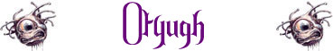

(9-12) 9 (+10 punti ferita);
Febbre Lurida;
Afferrare e Trascinare;

|
|
Ambiente/Habitat | Caverne, Miniere e Sotterranei |
| Frequenza | Rara | |
| Organizzazione | Solitary | |
| Periodo di Attività | Qualsiasi | |
| Dieta | Onnivora | |
| Intelligenza | Low intelligence (5) | |
| Punti Combattimento | 11 Punti Combattimento | |
| Tesoro | Occasionale | |
| Allineamento Dominante | Neutrale | |
| Numero di Apparizione | 1 | |
| Classe Armatura | 3 [10 base, 7 corazza] | |
| Movimento | 4 esagoni | |
| Dadi Vita |
1d12: (1-8)
8
(+10 punti ferita);
(9-12) 9 (+10 punti ferita); |
|
| Thac0 | [8 DV] 12 [9 DV] 11 | |
| Numero di Attacchi | Tentacolo * 2 (9 metri) / Morso | |
| Danni | 1d8+2 (botta) * 2 / 1d12+3 (taglio) | |
| Poteri Offensivi |
Istinto Predatorio; Febbre Lurida; Afferrare e Trascinare; |
|
| Poteri Difensivi | Robustezza Superiore (+10 punti ferita); | |
| Poteri Generici | Mimetizzazione; | |
| Vulnerabilità | Nessuna | |
| Resistenza alla Magia | Nessuna | |
| Sensi | Infravisione (21 metri), Sensi Superiori | |
| Dimensioni | Large (3 m. di larghezza) | |
| Morale | Champion (15) | |
| Valore in Punti Esperienza | [8 DV] 2414 [9 DV] 3329 |
|
TIRI SALVEZZA DELLA CREATURA |
|||||||
| CORAGGIO | ENERGIA VITALE | MAGIA | MALATTIA | MENTE | RIFLESSI | ROBUSTEZZA | VELENO |
| 0 | +5% | 0 | +10% | 0 | -10% | +5% | 0 |
| 42 | 42 | 57 | 31 | 55 | 59 | 39 | 38 |
Descrizione
Questa creatura è un ammasso di carne rigonfio coperto da una dura pelle del colore della roccia. Un peduncolo tentacolare, lungo circa un metro e mezzo, si erge dalla sommità del suo corpo disgustoso ospitando tre occhi rossi senza pupille. Le enormi fauci sono poco più di una vasta apertura ripiena di denti affilati come rasoi che si trova al centro della massa corporea. La creatura strascica le sue tre zampe spesse e robuste e possiede due lunghi tentacoli che terminano con appendici dalla forma di foglia, ricche di protrusioni spinose.
Combat
Questi mostri attaccano quando si sentono minacciati o quando hanno fame, altrimenti tendono a rimanere nascosti. Gli otyugh possono colpire i loro avversari con i loro possenti tentacoli, che usano anche per portare le prede alla bocca per divorarle.
ISTINTO PREDATORIO (Moderate Special Ability): La creatura possiede un forte istinto predatorio, per tale motivo costei riceve un bonus costante di +1 ai suoi tiri per colpire.
FEBBRE LURIDA [MORSO] (Superior Special Ability): L'attacco indicato di questa creatura è estremamente infettivo. Le vittime che sono morse da questo essere, infatti, devono superare immediatamente un tiro salvezza contro malattia per non infettarsi ammalandosi della seguente malattia.
Tipo di Contagio:
Esposizione diretta alla fonte
Tiro salvezza:
Senza Modificatori
Incubazione:
1 giorno
Prima fase:
3d10 giorni = La temperatura corporea della vittima sale e la stessa è colpita
da una febbre strisciante. La vittima si considera incapacitata.
Tiro salvezza:
Senza Modificatori
Seconda
fase: 2d4+2 giorni = La febbre
peggiora, la temperatura diviene altissima e la vittima cade in stato comatoso.
Tiro salvezza: Senza Modificatori
Ultima fase:
Morte della Creatura
Immunizzazione:
Nessuna
Note:
In caso di guarigione natura la vittima
resterà comunque incapacitata, avvertendo una forte debolezza, negli 1d3 giorni
successivi alla guarigione.
AFFERRARE E TRASCINARE [TENTACOLI] (Superior Special Ability): Qualora la creatura colpisca una vittima con gli attacchi indicati effettuando un tiro naturale pari da 17 a 20 la afferrerà (qualora la sua taglia sia ricompresa tra Small e Large). La vittima catturata si considererà quindi a tutti gli effetti incapacitata e non potrà spostarsi dalla posizione occupata. Alla fine di ogni round di combattimento, inoltre, la vittima sarà stritolata per 1d6 danni da stritolamento e, qualora la creatura desideri, sarà trascinata di peso di 3 metri verso la direzione di quest'ultima. La creatura, però, non potrà utilizzare il tentacolo per effettuare altri attacchi fino a che tiene stretta la vittima con lo stesso. Dal canto suo la vittima di questo attacco può effettuare un'azione complessa per provare a liberarsi dal tentacolo che la sta stritolando. L'azione, che fa accumulare un punto fatica, necessita di entrambe le mani libere e di un intero round al termine del quale la vittima potrà effettuare una prova di forza contrapposta ad una prova effettuata dal fustigatore (che si considera avere forza pari a 19). Se la vittima vince tale prova, alla fine del round, costei si sarà liberata senza subire i danni da stritolamento e senza essere stata trascinata. I tentacoli, inoltre possono essere attaccati e tagliati, a tal fine si consideri che solo utilizzando un'arma da taglio in corpo a corpo un tentacolo potrà essere tagliato qualora siano provocati in un unico colpo 15 danni da taglio, si consideri che per tale finalità un tentacolo possiede Classe Armatura pari a 3. Un tentacolo tagliato sarà sostituito dalla creatura che lo rigenererà entro 24 ore.
ROBUSTEZZA SUPERIORE (Typical Ability): Il fisico della creatura è estremamente robusto. Ciò conferisce alla stessa una robustezza superiore che gli garantisce 10 punti ferita supplementari.
MIMETIZZAZIONE [AMMASSO DI RIFIUTI OD ALTRI DETRITI] (Moderate Special Ability): Quando la creatura resta ferma è capace di mimetizzarsi nell'ambiente indicato. In particolare, fino a che resta ferma costei non potrà essere notata dalle creature che passino ad una distanza superiore a 30 metri ed otterrà una possibilità pari all'80% di non essere notata dalle creature che le passano ad una distanza inferiore. Utilizzare quest'abilità richiede un'azione complessa dalla durata dell'intero round e la creatura potrà risultare, quindi, nascosta solo alla fine del round. Per restare nascosta la creatura non potrà compiere altre azioni complesse e non potrà spostarsi (si faccia eccezioni per piccoli movimenti effettuati sul posto). Si noti che questa abilità non può essere utilizzata nei confronti di chi ha già visto la creatura fino a che questa non esce dalla sua linea visiva. Si noti che il tiro percentuale è effettuato segretamente dalla creatura un'unica volta ed il suo risultato sarà applicato a qualsiasi soggetto fino a che costei non si sposti od agisca diversamente. Il risultato di questo tiro si considererà incrementato di una penalità del +10% al fine di verificare se la creatura si è nascosta nei confronti di soggetti dotati di Sensi Superiori o che posseggano la competenza Observation ed abbiano superato una prova nella stessa (+15% nei confronti delle creature che abbiano entrambe le caratteristiche). Il risultato del tiro si considererà incrementato di un'ulteriore penalità del +25% al fine di verificare se la creatura si è nascosta nei confronti di soggetti dotati di infravisione (che sia attiva e sempre che la creatura si trovi all'interno del suo raggio). Qualora la creatura risulti nascosta con successo alla vista dei suoi avversari ed agisca improvvisamente costei imporrà loro una penalità di -3 alla relativa prova sulla sorpresa.
Habitat/Society
Gli Otyugh, anche conosciuti come Gulguthra oppure come Divoratore di Escrementi, sono grottesche e pericolose creature sotterranee che strisciano tra le masse di rifiuti. Anche se solitamente si cibano di qualsiasi tipo di scarto, non disdegnano affatto la ghiotta possibilità di cibarsi di carne fresca, qualora se ne presenti l'opportunità. Questi mostri trascorrono la maggior parte del loro tempo nelle loro tane, che sono piene di carogne, ciarpame ed ogni altro tipo di rifiuto esistente. Un Otyugh di solito si ricopre di questi orribili avanzi, mentre solo gli organi sensoriali (che si trovano sul peduncolo) spuntano all'esterno; la creatura rimane in questa posizione per ore, mangiando l'immondizia ed aspettando l'avvicinarsi di una sprovveduta preda da sorprendere. Queste creature non parlano ma possono comunicare telepaticamente i loro stati d'animo alle creature che si trovino entro 15 metri di distanza. Ciò avviene, però, molto raramente in quanto di solito l'Otyugh non ha molto da dire alle altre creature che considera solitamente prede. Questa forma di comunicazione è usata solitamente nei confronti di chi convive con queste creature per ottenere cibo e rifiuti commestibili.
Ecology
A volte alcune creature intelligenti che popolano il sottosuolo convivono con queste aberrazioni, poiché le considerano un metodo vantaggioso per smaltire i rifiuti e per difendere il loro territorio. Queste creature sono solite gettare rifiuti nelle tane degli Otyugh, i quali generalmente non attaccano le creature in questione. Questa creature è bisessuale e produce una volta all'anno un ammasso di uova gelatinose. Le uova si schiudono dopo circa un mese ed il primo nato divora tutte le altre. In sei mesi, usufruendo di cibo sufficiente, il piccolo assume le dimensioni di un adulto. Quando ciò avviene il genitore lo allontana e il nuovo essere deve trovarsi una diversa dimora (a meno che queste creature non si trovino in una grande discarica piena di cibo abbondante dove non c'è competizione per la sopravvivenza, in tali occasioni è possibile incontrare anche diversi creature che vivono vicine ma non cooperano fattivamente prevalendo sempre il loro spirito di predatore autonomo).
Mystical Resource Sourge
(Occhi) Quantità:
3, Presenza 10% - Scuola di Magia:
Divination
- Qualità della Risorsa: Common.
Mystical Resource Sourge
(Tentacoli) Quantità:
2, Presenza 20% - Scuola di Magia:
Alteration
- Qualità della Risorsa: Common.
Mystical Resource Sourge
(Lingua) Quantità: 1, Presenza 33% -
Effetto Particolare:
Malattia
- Qualità della Risorsa: Common.